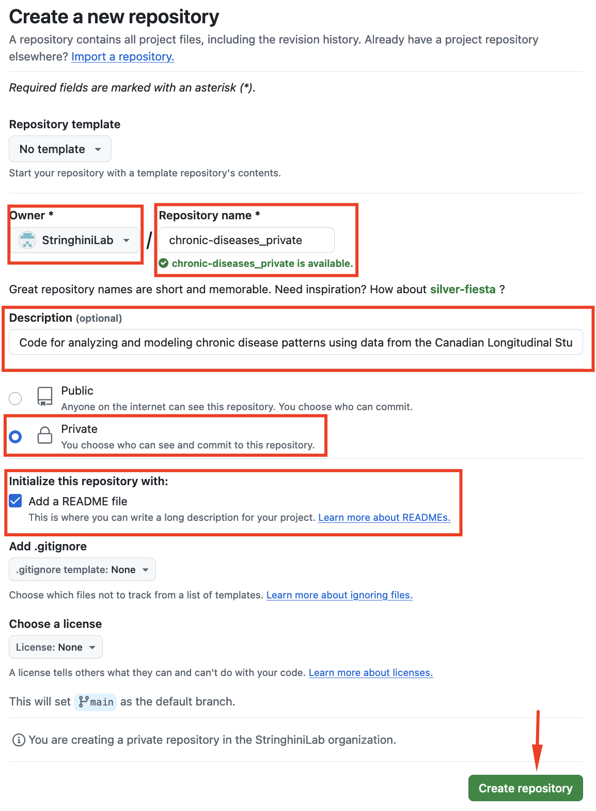
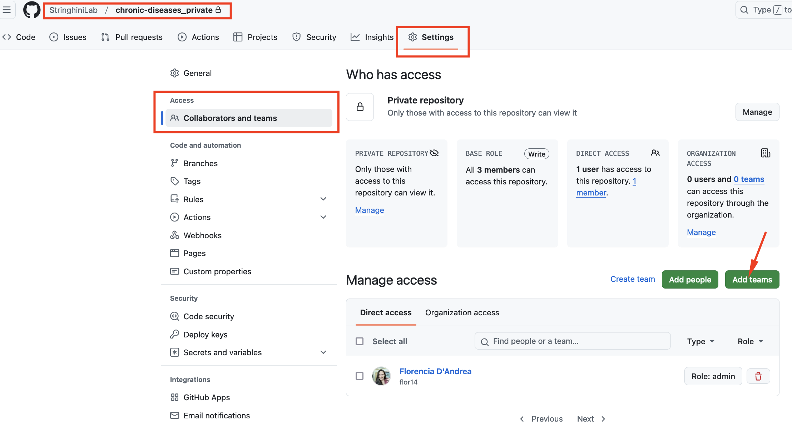
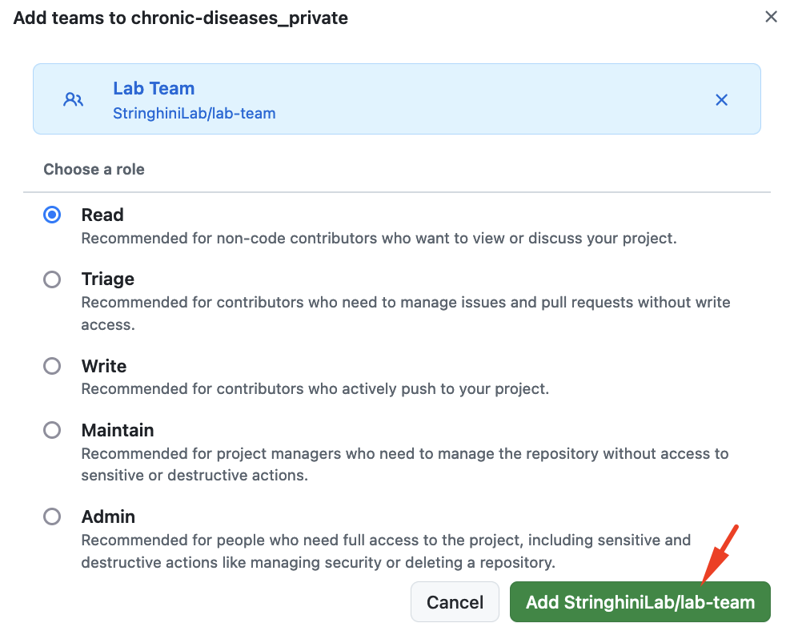
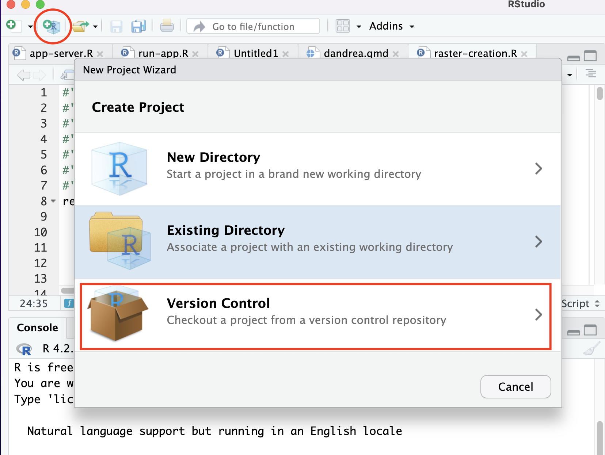
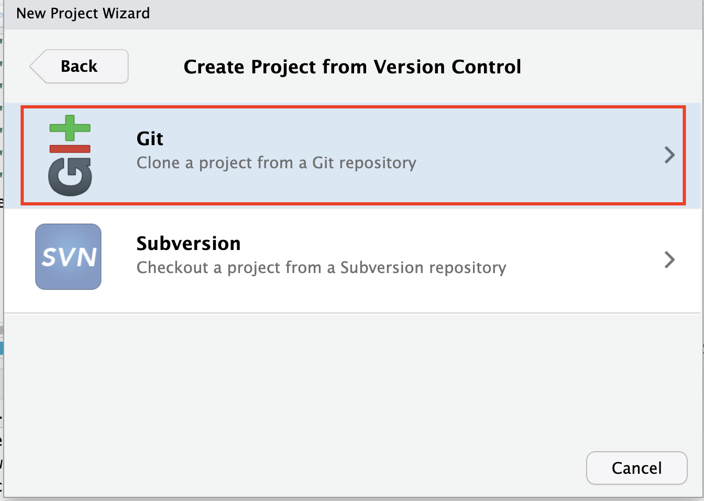
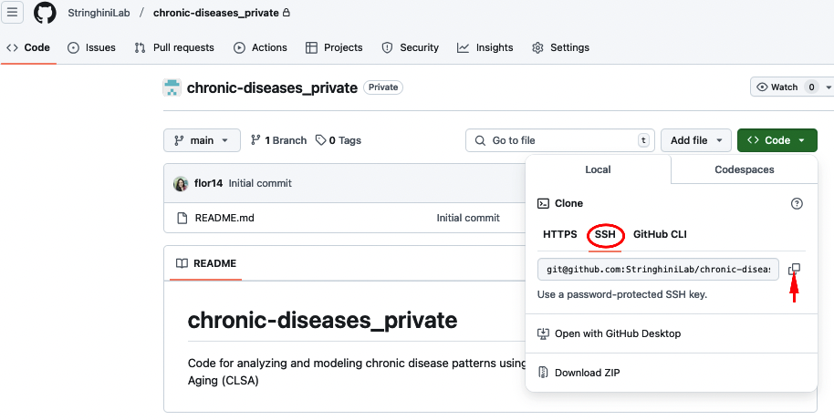
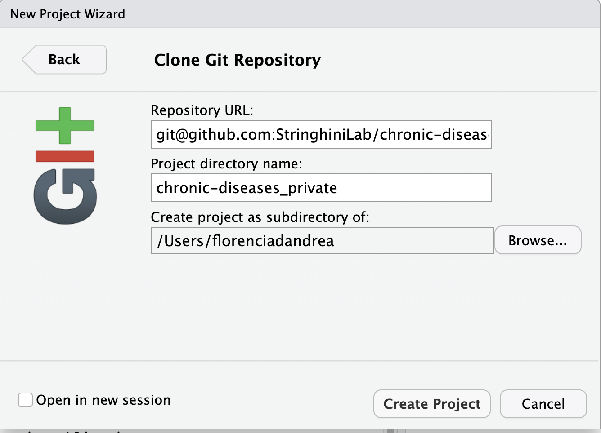
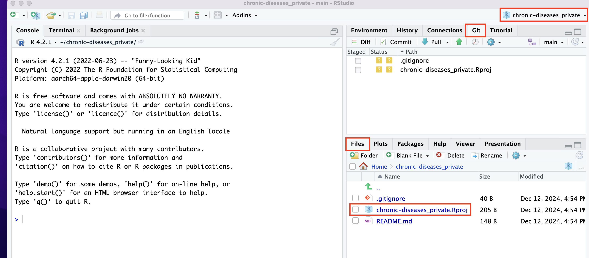

2 Starting a New Project
These steps only need to be completed once, at the beginning of a project.
Checklist ✅
- Create a private repository by new project.
- Add the Lab Team to the repository.
- Clone the repository and associate it with an RStudio Project.
- Add your Data folder to
.gitignore. - Complete the
READMEfile using the template.
2.1 Create a private repository by new project
When starting to work on a new project, your first step is to create a private repository in the lab’s GitHub organization: StringhiniLab GitHub.
- Click the green New button to open a window like this:

- Complete/select using the following criteria:
Owner
SelectStringhiniLabas the owner, not your personal GitHub account.Repository Name
Choose a name that represents your project. Since this repository will be private, append_privateto the name.
For example, if the repository name ischronic-diseases, name itchronic-diseases_private.Description
Provide a more detailed description of the project here. This helps identify the repository’s content in the organization.Public or Private?
Ensure the repository is set toPrivate.Initialize Repository With
Add aREADME.md.
Ignore the other options for now.
If everything works, you’ll see your repository within the GitHub organization labeled as Private.
2.2 Add the Lab Team to the repository

Navigate to the repository’s
Settingstab.
In the left-hand sidebar, find and click onCollaborators and teams.Click Add teams and add
Lab Team.
By default, you will select the Read role for the team. The idea is that other Lab Members can view the repository but will not be able to edit it by mistake.

This allows all current Lab Members to view (but not modify) your project.
If you don’t want to share an analysis with other Lab Members, you can create a repository in your personal GitHub account instead. However, always ensure sensitive data is not pushed to GitHub for confidentiality reasons.
All repositories in StringhiniLab should be accessible to the Lab Team, which is why these repositories are hosted in the organization instead of personal accounts. Remember that individuals who are Owners of the organization can view all repositories even if there are not part of the Team.
2.3 Clone the repository and associate it with an RStudio Project
We recommend changing the default option Restore .RData into workspace at startup as explained in this section. (Posit 2024)
Open RStudio
If RStudio is not installed, complete first the installation instructions in the Onboarding section.Clone the Repository
In RStudio:
File>New Project>Version Control>Clone a Project from a Git Repository.
 
Go back to the repository and copy the repository’s URL.

And paste it in the correct field:

If successful, you’ll see a folder containing your project, including the README file that we created on GitHub, in the Files tab at the bottom-right of RStudio.
Note that an .Rproj icon has appeared. Clicking on this icon outside of RStudio will open RStudio directly within the project.
Additionally, the project name now appears in the top-right corner. By opening that menu, you can easily switch between projects without leaving the RStudio IDE.
You’ll also notice a tab named Git in the top-right panel.

Check the RStudio IDE User Guide (Posit 2024)
Read the Projects section in Chapter 6 of R for Data Science (Wickham and Grolemund 2024)
2.3.1 Add your Data folder to .gitignore
We work with sensitive data. If working locally, create a data folder (e.g., click the + Folder icon in the Files tab). Move your data files into this folder.
Open the .gitignore file and add the line data/. This tells Git to ignore the contents of the data folder, preventing accidental data pushes.
We recommend creating at least two sub-folders within data/:
raw/: Use this folder to store the original datasets.processed/: Use this folder to save any datasets generated as preliminary or final results from your analyses.
If data/ is listed in your .gitignore file, both subfolders will automatically be ignored by Git since they are located within the data/ folder.
If the folder is not in the project root or has a different name, adjust the .gitignore settings accordingly.
Your project structure should look like this:
project-folder/
├── .gitignore # Specifies files and folders to ignore in version control
├── README.md # Documentation about the project
├── data/ # Folder to store datasets
├── raw/ # Original datasets (never modified directly) │
└── processed/ # Cleaned and processed datasetsThere are many files you can use run your code. You can use a basic R script (Wickham and Grolemund 2024), an RMarkdown document or its more current version Quarto.
A Quarto document, just like RMarkdown, allows you to include code chunks throughout a text and save it as a Word, PDF, or HTML report. Combining text where you explain your reasoning and the details of the analysis with the code chunks makes it much easier to understand each section of code, both for yourself and for other readers.
- To use Quarto, you must first install it
- Tutorial to learn how to create a document with Quarto (Quarto Project 2024)
It’s important to note that there is a learning curve for using tools like this. Creating a simple R script might be a good enough option if you’re looking to start your analysis more straightforwardly.
and you .gitignore file should look like this:
.Rproj.user
.Rhistory
.RData
.Ruserdata
data/2.4 Complete the README using the template
Before starting work, fill out the README.md file with the following information:
# Title
## Author
**Name:** [Your Name]
**Email:** [Your Name]
## Start Date
[YYYY-MM-DD]
## Objective
The objective of this project is to ...
## Database Used and Version
**Database Name:** [Name]
**Data Version:** [Specify version or date accessed]
-[] Sensitive data is stored locally and excluded from version control using `.gitignore.`
-[] All analyses comply with the data use agreements.
## Project Structure
chronic-diseases/
├── data/ # Folder for datasets
│ ├── raw/ # Original datasets (never modified directly)
│ └── processed/ # Cleaned and processed datasets
├── scripts/ # R scripts for analysis
├── outputs/ # Figures, tables, and other results
├── README.md # Project overview and documentation
└── .Rproj # RStudio project file
## Reproducibility
Run `sessionInfo()` in the console and paste the output between the two lines with backticks:
```
```
There is more material available on organizing project structures (Eugene Barsky), using .gitignore (The Turing Way Community 2023) or other resources listed here, or creating good README files (The Turing Way Community 2023) and name conventions (Eugene Barsky) if you want to explore further.